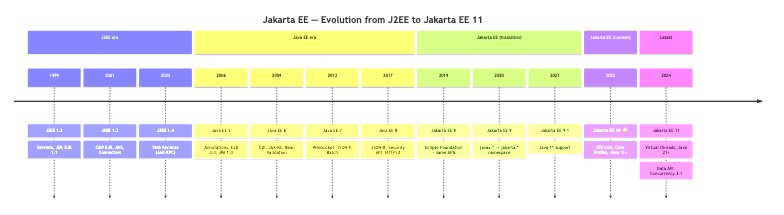
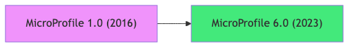
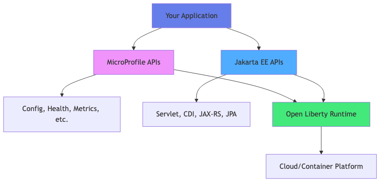

Introduction to Jakarta EE and MicroProfile
Enterprise Java Development with Open Liberty
📋 Learning Objectives
By the end of this lecture, you will be able to:
| ✅ | Understand Jakarta EE and MicroProfile ecosystems |
| ✅ | Differentiate between Jakarta EE and MicroProfile |
| ✅ | Identify core specifications and APIs |
| ✅ | Set up Open Liberty development environment |
| ✅ | Create and deploy your first application with Podman |
| ✅ | Understand the role of application servers |
🎯 What is Jakarta EE?
Jakarta EE (formerly Java EE) is a set of specifications for building enterprise applications in Java.
Key Characteristics:
- Standard-based: Industry-wide specifications
- Vendor-neutral: Multiple implementations available
- Enterprise-ready: Built for scalability and reliability
- Open-source: Community-driven development under Eclipse Foundation
Evolution Timeline:
⭐ This course targets Jakarta EE 10 — newer versions exist but are not yet widely adopted in production.

3 / 35🚀 What is MicroProfile?
Eclipse MicroProfile is a set of specifications optimized for microservices architecture.
Key Characteristics:
- Cloud-native: Designed for cloud and containers
- Microservices-focused: Lightweight and modular
- Complementary to Jakarta EE: Extends Jakarta EE capabilities
- Rapid innovation: Faster release cycles than Jakarta EE
Timeline:
⭐ This course targets MicroProfile 6.0 — the latest stable release aligned with Jakarta EE 10 Core Profile.

4 / 35🔄 Jakarta EE vs MicroProfile
Comparison Table
| Aspect | Jakarta EE | MicroProfile |
|---|---|---|
| Focus | Enterprise applications | Microservices |
| Scope | Comprehensive platform | Targeted specifications |
| Release Cycle | Slower, stable | Faster, innovative |
| Size | Full-featured | Lightweight |
| Use Case | Monoliths & Services | Cloud-native apps |
| Governance | Eclipse Foundation | Eclipse Foundation |
🤝 Jakarta EE + MicroProfile Together

Best Practice: Use Jakarta EE for core enterprise features + MicroProfile for cloud-native capabilities
6 / 35📦 Jakarta EE Core Specifications
Web Technologies
- Jakarta Servlet - HTTP request/response handling
- Jakarta Server Pages (JSP) - Dynamic web pages
- Jakarta Server Faces (JSF) - Component-based UI framework
Business Logic
- Jakarta Contexts and Dependency Injection (CDI) - Dependency injection
- Jakarta Enterprise Beans (EJB) - Business components
Data Persistence
- Jakarta Persistence (JPA) - Object-relational mapping
- Jakarta Transactions (JTA) - Transaction management
🌐 Jakarta RESTful Web Services
Jakarta RESTful Web Services (JAX-RS)
- Build REST APIs with annotations
- JSON/XML data binding
- HTTP method mapping
java
@Path("/clients")
public class ClientResource {
@GET
@Produces(MediaType.APPLICATION_JSON)
public List<Client> getAllClients() {
return clientService.findAll();
}
@POST
@Consumes(MediaType.APPLICATION_JSON)
public Response createClient(Client client) {
clientService.save(client);
return Response.status(201).build();
}
}
8 / 35
⚡ MicroProfile Core Specifications
Configuration
- MP Config - Externalized configuration
- Environment-specific settings
- Dynamic configuration updates
Observability
- MP Health - Health check endpoints
- MP Metrics - Application metrics
- MP OpenTracing - Distributed tracing
Resilience
- MP Fault Tolerance - Circuit breakers, retries, timeouts
- MP Rest Client - Type-safe REST clients
🔧 MicroProfile Config Example
java
@ApplicationScoped
public class BankingService {
@Inject
@ConfigProperty(name = "bank.api.url")
private String apiUrl;
@Inject
@ConfigProperty(name = "bank.max.transfer", defaultValue = "10000")
private BigDecimal maxTransfer;
public void processTransfer(BigDecimal amount) {
if (amount.compareTo(maxTransfer) > 0) {
throw new IllegalArgumentException("Exceeds maximum");
}
// Process transfer
}
}
Configuration file (microprofile-config.properties):
properties
bank.api.url=https://api.bank.com
bank.max.transfer=50000
10 / 35
💊 MicroProfile Health Example
java
@Health
@ApplicationScoped
public class DatabaseHealthCheck implements HealthCheck {
@Inject
private DataSource dataSource;
@Override
public HealthCheckResponse call() {
try (Connection conn = dataSource.getConnection()) {
boolean isHealthy = conn.isValid(5);
return HealthCheckResponse
.named("database-check")
.status(isHealthy)
.build();
}
catch (SQLException e) {
return HealthCheckResponse
.named("database-check")
.down()
.withData("error", e.getMessage())
.build();
}
}
}
Access: http://localhost:9080/health
📊 MicroProfile Metrics Example
java
@ApplicationScoped
public class TransferService {
@Inject
@Metric(name = "transfers_total", absolute = true)
private Counter transferCounter;
@Timed(name = "transfer_duration",
description = "Time to complete transfer")
public void transfer(Account from, Account to, BigDecimal amount) {
// Perform transfer
transferCounter.inc();
}
}
Access metrics: http://localhost:9080/metrics
🦅 Open Liberty: The Runtime
Open Liberty is IBM's open-source Jakarta EE and MicroProfile runtime.
Why Open Liberty?
| ✅ | Lightweight: Fast startup, small footprint |
| ✅ | Modular: Load only what you need |
| ✅ | Cloud-native: Perfect for containers |
| ✅ | Full compliance: Jakarta EE 10 + MicroProfile 6 |
| ✅ | Developer-friendly: Hot reload, dev mode |
| ✅ | Production-ready: Used by IBM, Red Hat, and others |
Comparison with Other Runtimes
| Feature | Open Liberty | WildFly | Payara |
|---|---|---|---|
| Startup Time | ⚡ Very Fast | Fast | Medium |
| Memory | 💚 Low | Medium | Medium |
| MicroProfile | ✅ Full | Partial | Full |
| Container-ready | ✅ Excellent | Good | Good |
🏗️ Jakarta EE + MicroProfile Project Structure
banking-app/
├── pom.xml # Maven configuration
├── src/
│ ├── main/
│ │ ├── java/
│ │ │ └── com/bank/
│ │ │ ├── entity/ # JPA entities
│ │ │ ├── service/ # Business logic
│ │ │ ├── rest/ # JAX-RS endpoints
│ │ │ ├── health/ # MP Health checks
│ │ │ └── config/ # MP Config
│ │ ├── resources/
│ │ │ ├── META-INF/
│ │ │ │ ├── persistence.xml # JPA config
│ │ │ │ └── microprofile-config.properties
│ │ │ └── application.properties
│ │ ├── liberty/
│ │ │ └── config/
│ │ │ └── server.xml # Liberty config
│ │ └── webapp/
│ │ └── WEB-INF/
│ │ └── beans.xml # CDI config
│ └── test/
└── Containerfile # Podman/Docker image💻 Development Environment Setup
Required Software:
- JDK 17+
```bash
java -version
# Should show: openjdk version "17.0.x" or higher
```
- Maven 3.8+
```bash
mvn -version
```
- Open Liberty 23.0.0.12+
- Download from: https://openliberty.io/downloads/
- Or use Maven/Gradle plugin
- Podman (instead of Docker)
```bash
podman --version
```
15 / 35🐳 Why Podman Instead of Docker?
Podman Advantages:
| ✅ | Daemonless: No background daemon required |
| ✅ | Rootless: Run containers without root privileges |
| ✅ | Docker-compatible: Same CLI commands |
| ✅ | Systemd integration: Native systemd support |
| ✅ | Security: Better security model |
| ✅ | Open-source: Truly open-source (OCI compliant) |
Podman vs Docker
| Feature | Podman | Docker |
|---|---|---|
| Daemon | ❌ No | ✅ Yes |
| Root Required | ❌ No | ⚠️ Often |
| CLI Compatibility | ✅ Docker-compatible | N/A |
| Systemd | ✅ Native | ⚠️ Limited |
| Security | ✅ Better | Good |
Note: alias docker=podman makes transition seamless!
🚀 Creating Your First Jakarta EE + MicroProfile Project
Step 1: Maven Project Setup
xml
<project xmlns="http://maven.apache.org/POM/4.0.0">
<modelVersion>4.0.0</modelVersion>
<groupId>com.bank</groupId>
<artifactId>banking-app</artifactId>
<version>1.0-SNAPSHOT</version>
<packaging>war</packaging>
<properties>
<maven.compiler.source>17</maven.compiler.source>
<maven.compiler.target>17</maven.compiler.target>
<jakartaee.version>10.0.0</jakartaee.version>
<microprofile.version>6.0</microprofile.version>
<liberty.version>23.0.0.12</liberty.version>
</properties>
<dependencies>
<dependency>
<groupId>jakarta.platform</groupId>
<artifactId>jakarta.jakartaee-api</artifactId>
<version>${jakartaee.version}</version>
<scope>provided</scope>
</dependency>
<dependency>
<groupId>org.eclipse.microprofile</groupId>
<artifactId>microprofile</artifactId>
<version>${microprofile.version}</version>
<type>pom</type>
<scope>provided</scope>
</dependency>
</dependencies>
<build>
<finalName>banking-app</finalName>
<plugins>
<plugin>
<groupId>io.openliberty.tools</groupId>
<artifactId>liberty-maven-plugin</artifactId>
<version>3.9</version>
<configuration>
<serverName>bankingServer</serverName>
<runtimeArtifact>
<groupId>io.openliberty</groupId>
<artifactId>openliberty-runtime</artifactId>
<version>${liberty.version}</version>
<type>zip</type>
</runtimeArtifact>
<bootstrapProperties>
<default.http.port>9080</default.http.port>
<default.https.port>9443</default.https.port>
<app.context.root>/</app.context.root>
</bootstrapProperties>
</configuration>
</plugin>
<plugin>
<groupId>org.apache.maven.plugins</groupId>
<artifactId>maven-war-plugin</artifactId>
<version>3.4.0</version>
<configuration>
<failOnMissingWebXml>false</failOnMissingWebXml>
</configuration>
</plugin>
</plugins>
</build>
</project>
17 / 35
📝 First Servlet with Health Check
java
package com.bank.web;
import jakarta.servlet.ServletException;
import jakarta.servlet.annotation.WebServlet;
import jakarta.servlet.http.HttpServlet;
import jakarta.servlet.http.HttpServletRequest;
import jakarta.servlet.http.HttpServletResponse;
import java.io.IOException;
@WebServlet("/hello")
public class HelloServlet extends HttpServlet {
@Override
protected void doGet(HttpServletRequest request,
HttpServletResponse response)
throws ServletException, IOException {
response.setContentType("text/html");
response.getWriter().println("""
<html><body>
<h1>Welcome to Jakarta EE + MicroProfile!</h1>
<p>Running on Open Liberty</p>
<ul>
<li><a href="/health">Health Check</a></li>
<li><a href="/metrics">Metrics</a></li>
</ul>
</body></html>
""");
}
}
18 / 35
⚙️ Open Liberty Configuration (server.xml)
xml
<server description="Banking Application Server">
<featureManager>
<feature>servlet-6.0</feature>
<feature>cdi-4.0</feature>
<feature>jaxrs-3.1</feature>
<feature>jsonb-3.0</feature>
<feature>persistence-3.1</feature>
<feature>mpConfig-3.0</feature>
<feature>mpHealth-4.0</feature>
<feature>mpMetrics-5.0</feature>
<feature>mpOpenAPI-3.1</feature>
</featureManager>
<httpEndpoint id="defaultHttpEndpoint"
host="*"
httpPort="9080"
httpsPort="9443" />
<webApplication location="banking-app.war"
contextRoot="/" />
</server>
19 / 35
🔨 Building with Liberty Maven Plugin
Add to pom.xml:
xml
<build>
<plugins>
<plugin>
<groupId>io.openliberty.tools</groupId>
<artifactId>liberty-maven-plugin</artifactId>
<version>3.9</version>
<configuration>
<serverName>bankingServer</serverName>
</configuration>
</plugin>
</plugins>
</build>
Commands:
bash
# Start Liberty in dev mode (hot reload)
mvn liberty:dev
# Package application
mvn liberty:package
# Run tests
mvn liberty:test-start liberty:test-stop
20 / 35
🐳 Containerfile for Podman
dockerfile
FROM icr.io/appcafe/open-liberty:full-java17-openj9-ubi
# Copy application
COPY --chown=1001:0 target/banking-app.war /config/dropins/
# Copy Liberty configuration
COPY --chown=1001:0 src/main/liberty/config/server.xml /config/
# Expose ports
EXPOSE 9080 9443
# Run Liberty
CMD ["/opt/ol/wlp/bin/server", "run", "defaultServer"]
Build and run with Podman:
bash
# Build image
podman build -t banking-app:latest .
# Run container
podman run -d -p 9080:9080 -p 9443:9443 banking-app:latest
# View logs
podman logs -f <container-id>
21 / 35
🌍 Testing Your Application
Start Liberty in Dev Mode:
bash
mvn liberty:dev
Access Endpoints:
Application: http://localhost:9080/
Health: http://localhost:9080/health
Metrics: http://localhost:9080/metrics
OpenAPI: http://localhost:9080/openapiExpected Health Response:
json
{
"status": "UP",
"checks": [
{
"name": "database-check",
"status": "UP"
}
]
}
22 / 35
🏦 Banking Application Architecture
Layered Architecture with MicroProfile:
📊 Course Roadmap
Week 1: Foundations
- Today: Jakarta EE, MicroProfile & Open Liberty ✅
- Next: Servlets and JSP (3h)
- Then: JPA and Database Integration (4h)
- Finally: CDI and Service Layer (3h)
Week 2: Cloud-Native & Microservices
- JAX-RS and REST APIs + MP Rest Client (3h)
- Domain-Driven Design (3h)
- Hexagonal Architecture + MP Config (2h)
- Microservices with MP Health, Metrics, Fault Tolerance (4h)
🎓 Key Takeaways
What We Learned Today:
| ✅ | Jakarta EE provides enterprise Java standards |
| ✅ | MicroProfile adds cloud-native capabilities |
| ✅ | Open Liberty is lightweight and modular |
| ✅ | Podman offers better security than Docker |
| ✅ | Combine Jakarta EE + MicroProfile for modern apps |
Jakarta EE vs MicroProfile:
- Jakarta EE: Comprehensive enterprise platform
- MicroProfile: Cloud-native microservices extensions
- Together: Best of both worlds!
Next Steps:
- Complete Lab 1: First Application with Open Liberty
- Set up Podman environment
- Explore MicroProfile specifications
📚 Additional Resources
Official Documentation:
- Jakarta EE: https://jakarta.ee/specifications/
- MicroProfile: https://microprofile.io/
- Open Liberty: https://openliberty.io/docs/
- Podman: https://podman.io/getting-started/
Recommended Reading:
- "Jakarta EE Cookbook" by Elder Moraes
- "Practical Cloud-Native Java Development with MicroProfile" by Emily Jiang
- "Open Liberty Guide" - https://openliberty.io/guides/
Community:
- Jakarta EE GitHub: https://github.com/eclipse-ee4j
- MicroProfile GitHub: https://github.com/eclipse/microprofile
- Open Liberty GitHub: https://github.com/OpenLiberty
💡 Best Practices
Development Guidelines:
- Use MicroProfile Config for all configuration
- Add Health Checks for all critical dependencies
- Instrument with Metrics for observability
- Leverage Liberty Dev Mode for rapid development
- Containerize with Podman for consistency
Architecture Decisions:
- Use Jakarta EE for core business logic
- Use MicroProfile for cloud-native features
- Deploy on Open Liberty for performance
- Run in Podman containers for portability
❓ Common Questions
Q: Should I use Jakarta EE or MicroProfile?
A: Use both! Jakarta EE for enterprise features, MicroProfile for cloud-native capabilities.
Q: Why Open Liberty over WildFly?
A: Liberty is lighter, faster, and has better MicroProfile support. Perfect for containers and microservices.
Q: Is Podman really better than Docker?
A: Yes for security and rootless operation. CLI is compatible, so transition is easy.
Q: Can I use MicroProfile without Jakarta EE?
A: Yes, but they work best together. MicroProfile builds on Jakarta EE foundations.
28 / 35🔍 Lab 1 Preview
Objectives:
- Create Maven project with Jakarta EE + MicroProfile
- Implement servlets with health checks
- Configure Open Liberty server
- Build and run with Podman
- Test health and metrics endpoints
What You'll Build:
A banking application with:
- Client management servlets
- MicroProfile health checks
- Configuration with MP Config
- Containerized with Podman
Time: 2 hours
Difficulty: Beginner
29 / 35📝 Homework
Before Next Lecture:
| ✅ | Complete Lab 1: First Application |
| ✅ | Install Podman and test basic commands |
| ✅ | Read MicroProfile Config specification |
| ✅ | Explore Open Liberty guides |
Optional:
- Set up PostgreSQL in Podman container
- Try Liberty dev mode features
- Read about MicroProfile Health patterns
🙋 Questions & Discussion
Discussion Topics:
- When would you choose Jakarta EE over Spring Boot?
- How does MicroProfile help with microservices?
- What are the benefits of Podman in enterprise environments?
Office Hours:
- When: [Your schedule]
- Where: [Your location/online]
- Contact: [Your email]
📅 Next Lecture
Servlets and JSP with MicroProfile
Date: [Next session date]
Duration: 3 hours
Topics:
- Servlet lifecycle in detail
- JSP and JSTL
- MVC pattern
- MP Config in web applications
- Health checks for web tier
Preparation: Complete Lab 1 and review HTTP methods
32 / 35Thank You!
Ready to Build Cloud-Native Enterprise Applications? 🚀
Remember:
- Jakarta EE + MicroProfile = Modern Enterprise Java
- Open Liberty = Fast, lightweight, cloud-ready
- Podman = Secure, rootless containers
- Complete Lab 1 before next session
See you in the next lecture!
33 / 35Appendix: Quick Reference
Important Annotations:
java
// Jakarta EE
@WebServlet("/path") // Servlet mapping
@Path("/resource") // JAX-RS resource
@Entity // JPA entity
@Inject // CDI injection
// MicroProfile
@ConfigProperty(name="key") // MP Config
@Health // MP Health check
@Timed // MP Metrics
@Retry // MP Fault Tolerance
34 / 35
Appendix: Commands Reference
Maven Commands:
bash
mvn liberty:dev # Dev mode with hot reload
mvn liberty:run # Run Liberty server
mvn liberty:stop # Stop Liberty server
mvn package # Build WAR file